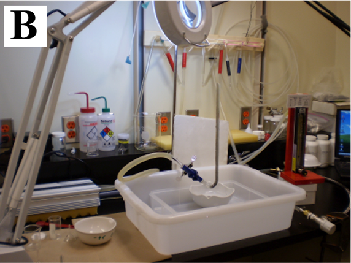

The MLA system is designed to provide quantitative analysis of rocks, sediments and other solid materials
Automated measurement system to do rapid and statistically reliable mineralogical measurements
Developed for process mineralogy, but its uses now extending in many applications
Based on the technologies of SEM and EDX
Advantages of Automation for Mineralogy
Unattended operation
Cost effective
Multiple samples
Statistical representation of sample (many 1000s of particles)
Repeatable
Negates operator bias
Replaces tedious manual analysis
Makes new types of measurements possible
Automated Mineralogy fundamentals
Custom software combines BSE and EDS X-ray detection
Multiple EDS detectors for accurate high-speed data acquisition
MLA
Automated Mineralogy applications
MLA
Signature Output and Data
Digital mineral maps
Mineral proportions
Particle and grain size
Particle and grain shape
Mineral processing data
Liberation
Mineral associations
Grade vs recovery
Oil and gas Data
Lithotyping
Porosity
Cuttings and core from same stratigraphic intervalOoidal grainstone cuttings
theoretical grade-recovery curve for an ore = definition of max. expected recovery by flotation of a mineral or element
at a given grade (= concentration). This is defined by surface area liberation of value minerals and is consequently directly
related to grind size utilised in the process.
MLA History
Development started in 1996
First system sold in 2000
The Mineral Liberation Analyzer (MLA) is an automated mineral analysis system that can identify minerals in polished sections
of drill core, particulate or lump materials, and quantify a wide range of mineral characteristics, such as mineral abundance,
grain size and liberation.
Automated Mineralogy Install Base
Quantitative Evaluation of Minerals by SCANning electron microscopy: QEMSCAN™ = a fast chemical data collection system
which uses a combination of BSE images and EDS analysis to create an image of a sample based on chemical composition.
Lecture Outline
Overview of MLA and Automated Mineralogy
Sample Presentation
Some SEM Basics
BSE and EDX Measurements by MLA
Some Data Outputs
Example Sandstone
Future Outlook
Sample Types and Presentation
Sample types
Mineral processing products
Drill cuttings
drill core
Hand specimen
Soils
Etc...
Presentation
Polished block (1inch/30mm)
polished thin-section (standard)
rough surface (diamond saw cut surface)
carbon tape (double-sided SEM tape)
Polished Particle Mounts
Epoxy mounts of sediments or crushed sedimentary rocks
Made after sieving the particles into discrete size fractions, typically
63 to 125 microns (230 to 120 mesh)
125 to 177 microns (120 to 80 mesh)
177 to 354 microns (80 to 45 mesh)
~50,000 100 um particles
Monolayer Polished Sections
Preparation of closely-packed monolayer sections to expose every particle in mount
~50,000 100 um particles
Grains vs particles
a grain is always part of a particle OR the entire particle
A and B are particles
1 is a grain (thus A, the particle is also a grain)
2, 3, 4 and 5 are grains in particle B
4 and 5 are both the same mineral, but not touching and therefore are grains
Particles consist of one or more grains. Both grains and particles can consist of one or more discrete minerals of the
same type (e.g. a quartz grain in a particle can in fact be several quarts mineral grains (i.e. discrete but touching
minerals of the same type)). Grains can therefore be considered Contiguous Mineral Domains
Representative sampling
In order to minimize biases associated with non-representative sampling, riffling and sub-sampling prior to mounting is
important
Concentration of Heavy Minerals
Heavy liquids
Bromoform (CHBr3; 2.889 g/ml)
Methylene iodide (CH2I2; 3.325 g/ml)
...
Concentration by Hydroseparation
Mineral settling in a controlled upward pulsating water flow; more efficient separation compared to passive gravity settling
Pulsating water flow limits the settling of large, less dense particles, but allows smaller, denser particles to settle
unhindered

Lecture Outline
Overview of MLA and Automated Mineralogy
Sample Presentation
Some SEM Basics
BSE and EDX Measurements by MLA
Some Data Outputs
Example Sandstone
Future Outlook
SEM and MLA
SEM generates a beam of electrons in a vacuum which is scanned in a raster pattern over a specific area (called a frame)
of a rock or sediment sample
Backscattered electrons reflected off the minerals in each frame are collected on a screen to produce an image
Electrons that interact with minerals generate x-rays with measured energies characteristic of the elements present
SEM and MLA
MLA software integrates the BSE images and X-rays to identify the minerals and map their distribution in the frame, and
then steps the SEM beam to the next frame where the measurements are repeated